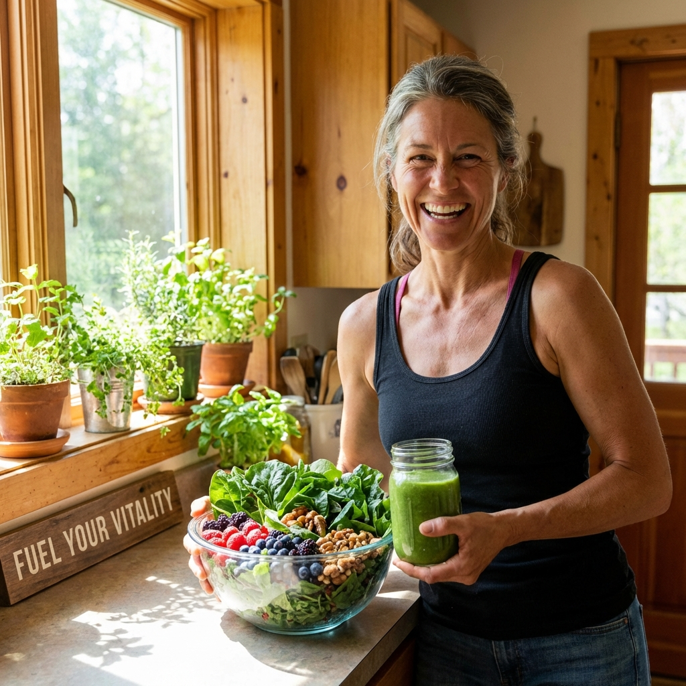

離婚後先做哪 6 件事
財務、住居、文件、情緒、社交與數位隱私，先把最容易失控的事變成清單。
閱讀主題 →把情緒與生活任務拆開，先處理最能恢復穩定感的那一塊。

財務、住居、文件、情緒、社交與數位隱私，先把最容易失控的事變成清單。
閱讀主題 →
戶籍、健保、銀行、居住、社交與工作節奏，先穩住生活基本盤。
閱讀主題 →門鎖、收納、夜間儀式與日常動線，先把家變成能讓自己穩下來的地方。
閱讀主題 →
不是急著找人填空，而是先分辨哪些關係值得靠近，哪些界線要保留。
閱讀主題 →
不急著證明自己，而是把技能、收入、時間與生活節奏重新排成可持續的版本。
閱讀主題 →與前伴侶、子女、親友、同事和新關係，都需要重新定義協議與標準。
閱讀主題 →